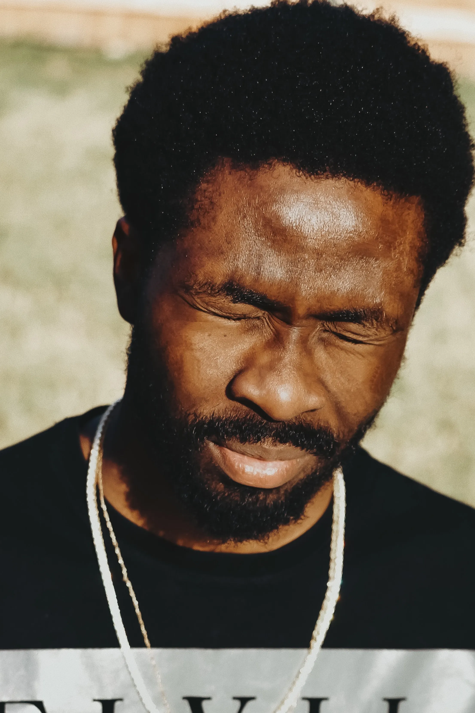
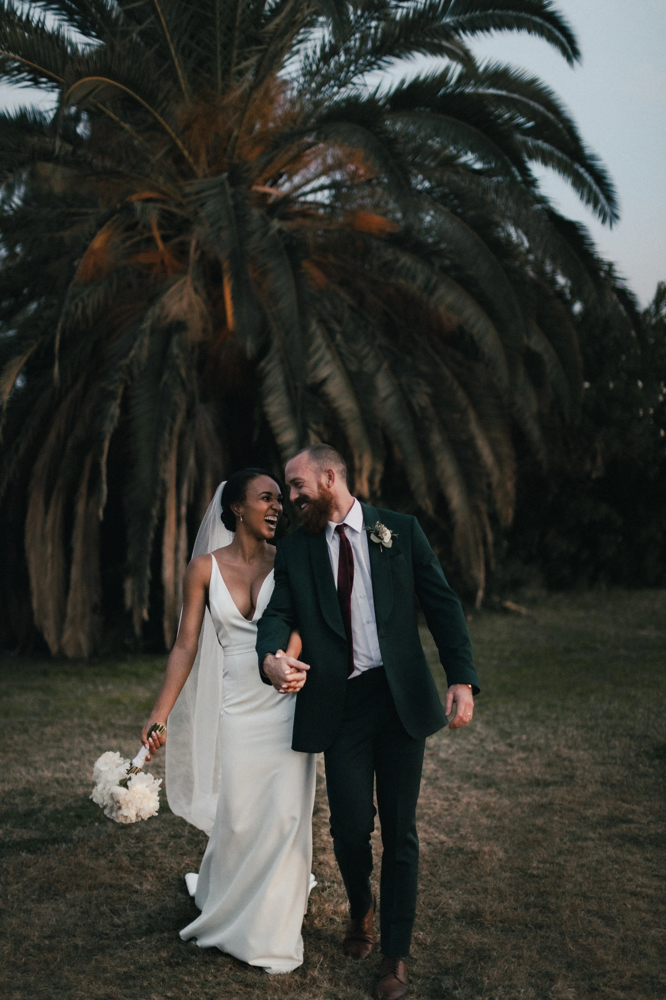
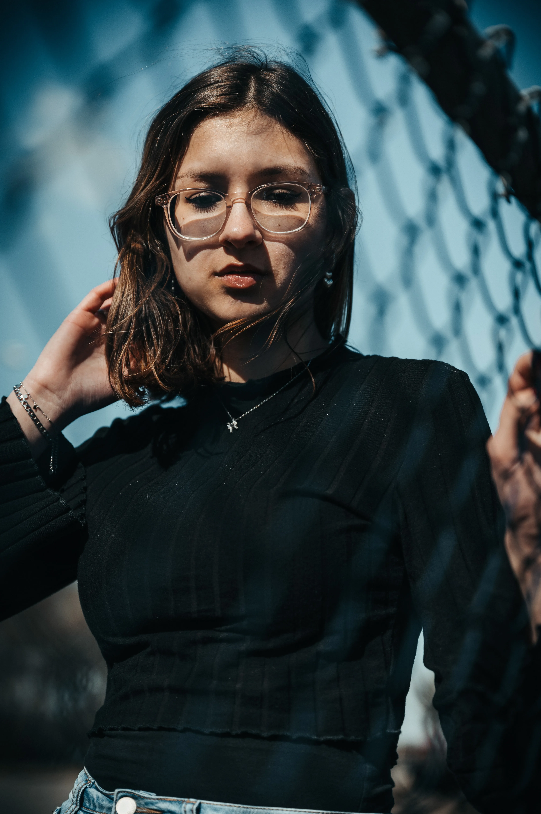
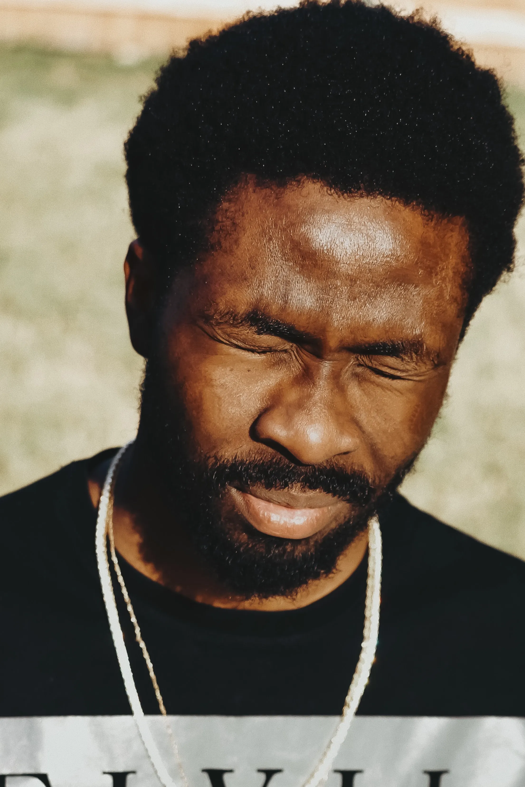
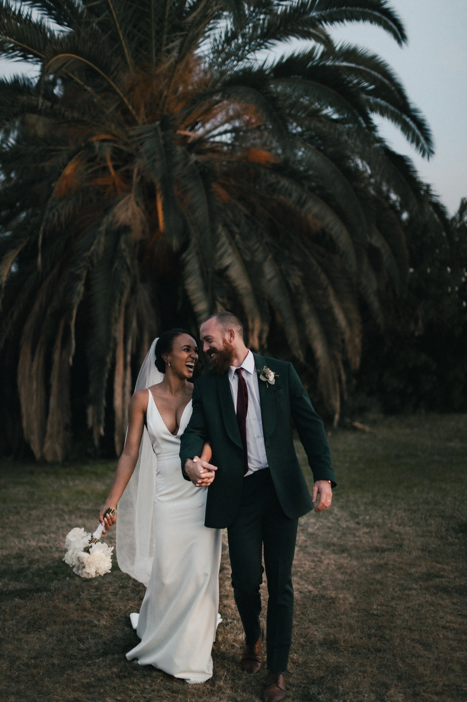
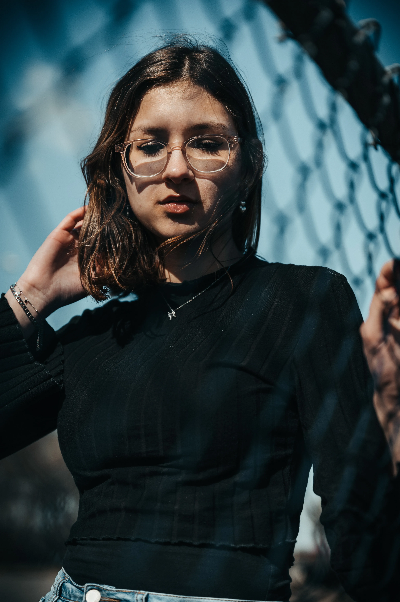

Nous passons notre vie à chercher le bonheur, et lorsque nous le touchons, nous voulons le figer à travers des photos de mariage, des portraits artistiques ou des photos d’entreprise professionnelles. Grâce à mon expertise de photographe en Île-de-France, je capture ces moments inoubliables pour les partager avec vos proches ou vos clients.
Un portrait n’est pas une ressemblance. Dès lors qu’une émotion ou qu’un fait est traduit en photo, il cesse d’être un fait pour devenir une opinion. L’inexactitude n’existe pas en photographie. Toutes les photos sont exactes. Aucune d’elles n’est la vérité.
Pour capturer vos moments les plus précieux lors de mariages, de portraits ou au sein de votre entreprise et garder un souvenir impérissable. En tant que photographe professionnelle basée en Île-de-France, je me déplace dans toute la région pour réaliser vos shootings photo personnalisés.
Vous souhaitez retoucher vos photos de mariage, portraits ou photos d'entreprise pour un résultat professionnel ? Bénéficiez d’un rendu optimal pour vos publications, sites web ou réseaux sociaux grâce à mes services de retouche photo en Île-de-France.
Partagez avec vos proches et vos clients les photos des moments partagés ensemble à travers un album photo personnalisé. Que ce soit pour votre mariage, vos portraits ou des événements d'entreprise, je conçois des albums qui reflètent votre histoire et votre identité.
De manière inconsciente, je crois, je guette un regard, une expression, des traits ou une nostalgie capable de résumer ou plus exactement de révéler une vie.

 




